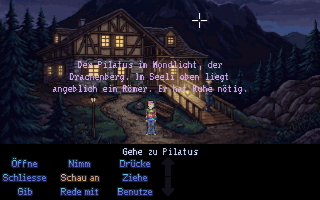
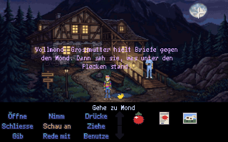
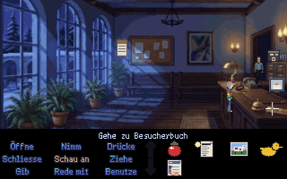
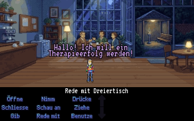
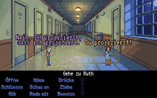
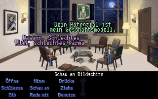
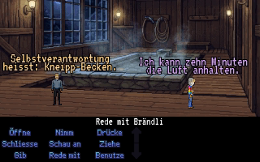
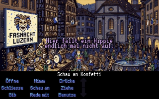

Trailer
Worum geht’s?
Urs Amstutz, 60, Alt-Hippie aus dem Entlebuch, landet per Gerichtsbeschluss in der Klinik Haus Lehn und will nur eins: ein Therapieerfolg werden. Dafür muss er drei Therapieziele abhaken – und dabei Ich-Botschaften-Duelle, Aktenschränke und das Kneipp-Becken überleben.
Kaum hat er es geschafft, übernimmt der Geist-Coach Swami Profitananda per Videobildschirm die Station («Dein Potenzial ist mein Geschäftsmodell») und schickt Urs auf die Innere Insel, tief in sein eigenes Unterbewusstsein. Dort muss er endlich etwas klar sagen, statt es weise zu umschreiben. Spoiler: Es waren immer nur Tomaten.
Szenen
Drei Bilder sind direkt aus dem Spiel, die anderen sind Entwürfe aus vorhandenen Hintergründen und Figuren – so soll es später aussehen.

im SpielNachts um zwölf auf der Rampe. Der Pilatus schaut zu. Der Nachtpfleger auch. Beide urteilen nicht, aber man spürt es. 
im SpielJedes Ding hat einen Kommentar. Hier der Vollmond, samt Grossmutters Briefen. Zum Glück gibt es dafür ein eigenes Verb: «Schau an». 
im SpielDer Empfang. Formulare, Stempel, Besucherbuch. Wer hier durchkommt, hat sein erstes Therapieziel schon halb erfüllt. 
EntwurfCafé «Achtsam». Die drei Wichtigen entscheiden über Urs’ Zukunft – bei Kamillentee und mit ernsten Gesichtern. 
EntwurfDas Ich-Botschaften-Duell. Beleidigungsfechten, nur freundlicher. Wer «spannend» sagt, hat schon halb verloren. 
EntwurfGruppenraum, Modul 1: «Dein Ich als Marke». Der Bildschirm flackert, das WLAN auch. Ein Geist-Coach in der Cloud kennt keine Sprechzeiten. 
EntwurfKneipp-Becken. Knietief, aber Brändli meint es ernst. Urs kann zum Glück zehn Minuten die Luft anhalten. 
Entwurf · AusblickAusblick: Kapellplatz an der Fasnacht. Guggenmusig, Konfetti und endlich ein Ort, an dem ein Hippie nicht auffällt.
Das steckt drin
-
9 Verben & Satzzeile wie 1990
«Öffne», «Nimm», «Rede mit» und sechs weitere: Verb anklicken, Ding anklicken, fertig. So haben wir damals Adventures gespielt – nur mit weniger Sackgassen.
-
Volle Sprachausgabe
Jede Zeile wird gesprochen, vom Nachtpfleger bis zum Geist-Coach. Der Text läuft zum Mitlesen trotzdem mit.
-
Kriens, Pilatus, Luzerner Fasnacht
Eine Klinik am Fuss des Pilatus, ein Kapellplatz voller Guggenmusig: Lokalkolorit statt Fantasy-Insel von der Stange.
Bereit für das Therapieziel?
Episode 1 entsteht gerade. Es kann noch wackeln, Texte, Bilder und Rätsel ändern sich. Schau trotzdem rein – Urs freut sich.